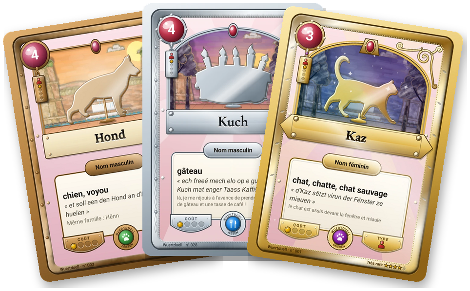

Schreiben, wie man spricht
Sie können es sagen, aber es zu schreiben, ist etwas anderes: Wohin kommt das ë, groß oder klein, ein e oder zwei? Die Tastatur antwortet Ihnen beim Tippen. Sehen Sie ihr beim Schreiben zu und übernehmen Sie dann: Tippen Sie auf einen Buchstaben der Testtastatur oder auf ihr Mikrofon, um mit ihr zu sprechen.
-
Sie errät, was folgt
Nach „nach eng“ schlägt sie schon „Kéier“ vor. Sie berücksichtigt, was Sie gerade geschrieben haben: ein Tippen, und das nächste Wort steht da.
-
Sie setzt die Akzente
Tippen Sie, ohne sich um ä, ë und é zu kümmern: Sie schlägt das richtig geschriebene Wort vor. Wenn Sie sie lieber selbst tippen, hat jedes seine eigene Taste.
-
Sie fängt Tippfehler ab
Ein vergessener Buchstabe, ein Buchstabe zu viel, eine Nachbartaste: Das richtige Wort kommt trotzdem.
-
Sie kennt die Rechtschreibung
Substantive werden großgeschrieben, wie es die Rechtschreibung verlangt, und lange Wörter schreiben sich mit einem Tippen. Die Tastatur stützt sich auf das offizielle Wörterbuch der Sprache: Sie erfinden nichts, Sie wählen aus.
Das Mikrofon schickt Ihre Stimme an die Universität Luxemburg, die sie aufschreibt, ohne sie zu speichern.
Sprechen Sie Luxemburgisch, sie schreibt
Sie müssen die Schreibweise nicht mehr suchen: Sprechen Sie Ihren Satz, die Tastatur schreibt ihn für Sie, mit Großschreibung und Satzzeichen.
- Tippen Sie auf das Mikrofon, rechts neben den Vorschlägen.
- Sprechen Sie ganz normal. Der Text erscheint, während Sie sprechen, und das Mikrofon schließt sich von selbst, wenn Sie aufhören.
- Lesen Sie es durch und senden Sie ab.
Das Mikrofon gehört zur Tastatur: Es begleitet Sie überall, wo Sie schreiben.
Ihre Stimme verlässt das Handy nur, wenn Sie auf das Mikrofon tippen, und geht an den Spracherkennungsdienst der Universität Luxemburg, der sie in Text umwandelt, ohne sie zu speichern. Zum Diktieren brauchen Sie deshalb eine Internetverbindung. Was Sie tippen, bleibt auf Ihrem Handy.


Als Zugabe
Jedes gefundene Wort wird zur Karte
Sieben kleine Spiele lassen Sie neue Wörter entdecken. Jedes gewonnene Wort kommt in Ihr Sammelheft, auf eine Karte mit einem Ort des Landes, und kehrt von selbst zurück, bis Sie es sich gemerkt haben.
Ihre Fragen
„Mein Handy unterstreicht meine Wörter rot.“
Aktivieren Sie die Rechtschreibprüfung der Tastatur: Ihre luxemburgischen Wörter werden in Ihren Nachrichten, Notizen und E-Mails erkannt.
„Ich mische mit Französisch.“
Schalten Sie „Französische Vorschläge“ in den Einstellungen der Tastatur ein: „ech hunn eng réunion muer“ schreibt sich, ohne die Tastatur zu wechseln.
„Android zeigt mir eine Warnung.“
Sie erscheint bei jeder Tastatur, ohne Ausnahme, wenn man sie aktiviert. Diese hier sendet nichts von dem, was Sie tippen.
„Ich habe ein iPhone.“
Die Tastatur gibt es vorerst für Android. Auf dem iPhone oder am Computer probieren Sie sie weiter oben auf dieser Seite aus: Tippen Sie auf einen Buchstaben der Testtastatur.
In drei Schritten installieren
- Installieren Sie die App über Google Play.
- Folgen Sie der Anleitung: Die App zeigt Ihnen Schritt für Schritt, wie Sie die Tastatur aktivieren.
- Probieren Sie sie direkt aus und schreiben Sie dann Ihre erste Nachricht.
Demnächst für iPhone und iPad
 Mit dem Handy scannen
Mit dem Handy scannen